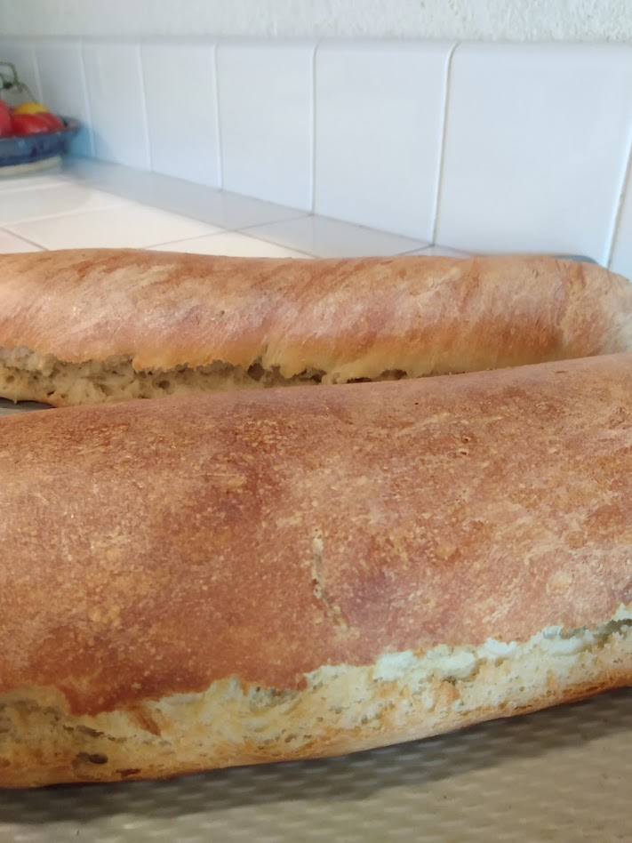

Bread
Serving size: Makes one loaf (you probably want a double batch)
Two fresh loaves
Ingredients
- 7/2 cups bread flour or all-purpose flour
- One packet (or 2 tsp) active yeast
- 2 tsp salt
- 3/2 cups water
- Grease (shortening)
- Optional add-ins: 1 tsp garlic powder, leaves from a few sprigs of rosemary
Instructions
Dissolve salt and yeast (and any add-ins) in water. Gradually add flour and knead it a bunch, so that it becomes chewier. Let it rise in a warm place until it's sufficiently poofy -- it should roughly double in size. Grease a baking sheet. Shape the bread and place it on the baking sheet, let it rise a final time in the oven, and then bake it on the bottom shelf of the oven until it sounds hollow. The cooking time is around 20 minutes and the temperature is around 450 Fahrenheit, but that will depend on the thickness of the bread and whether you preheat the oven.
Notes
I need to experiment much more with sourdough starters. This recipe is super easy, but for high quality bread, check out The Sourdough Journey instead. I also need to experiment with using a Dutch oven (since that will heat the bread evenly from all angles, and retain steam to form a nice crust), scoring loaves with a lame, varying how much I need the bread (this may affect the crumb), varying the moisture level, the type of flour (e.g. try bread flour and whole wheat flour and rye flour), and also varying the time and temperature of the baking.